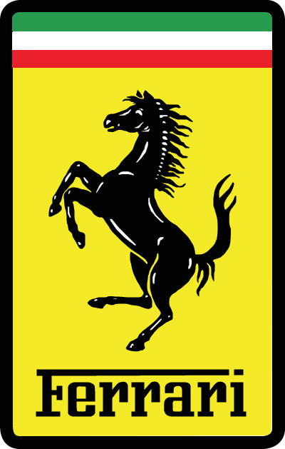
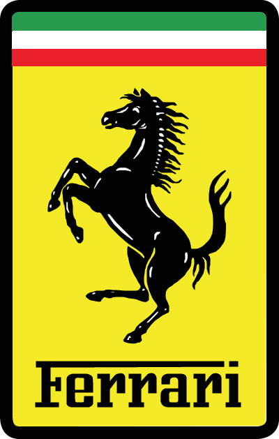
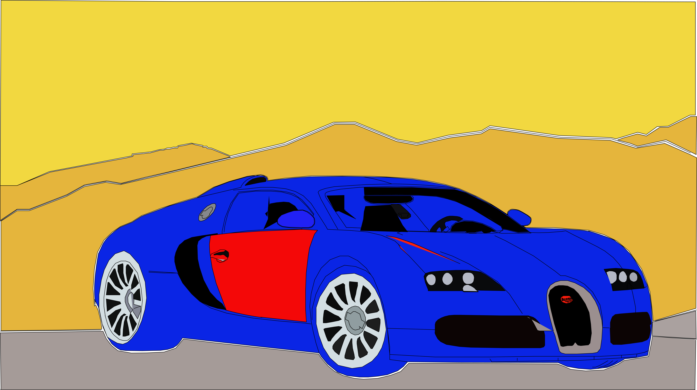
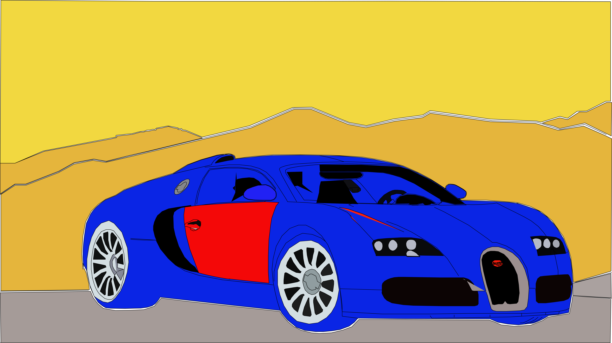

⋆Most of my work are all illustrations that I have traced. The pentool on Adobe illustrator is my favorite. I love tracing images on Illustrator because it makes me examine my abilities on how to use the pentool. The fun part about the pentool is that you can trace the exact image you want but if you do it slowoly and precisely. It is time-consuming I have to admit but it's worth the try and you will learn alot from using the pentool and it is a great experience. Below are imgaes of my work and what I have accomplished:


 

 
